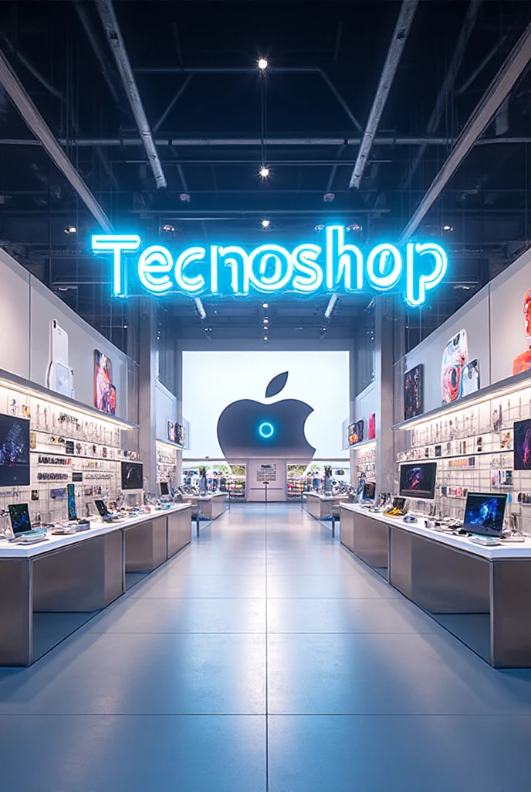
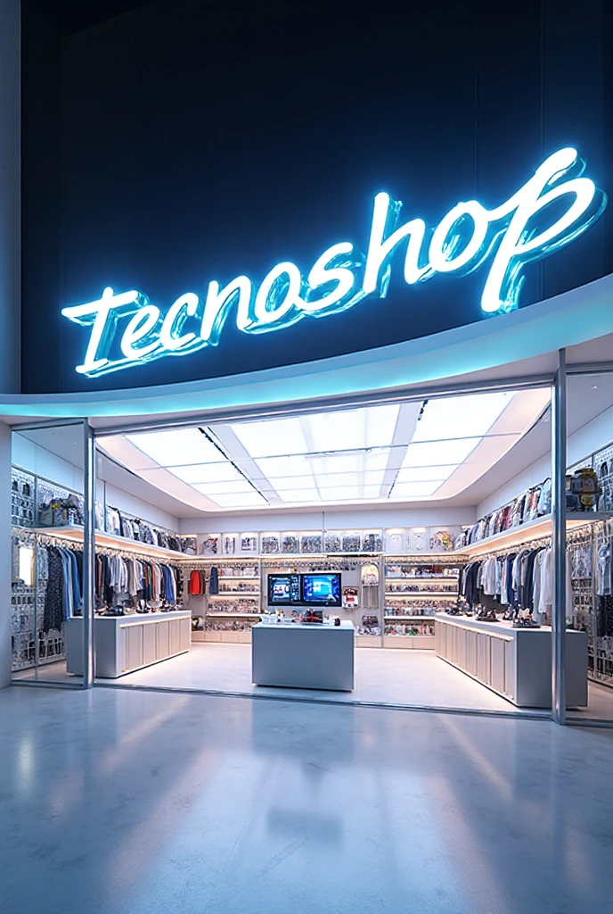
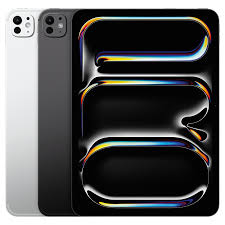
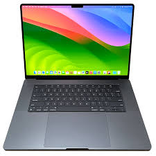
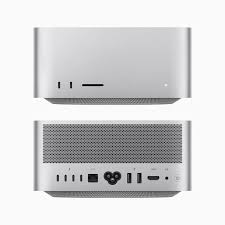
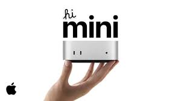
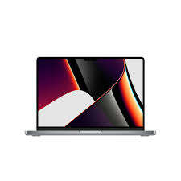
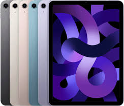

Bienvenido a TecnoShop
Encuentra los mejores dispositivos electrónicos con garantía y al mejor precio del mercado, una combinación que cada vez más consumidores valoran al momento de invertir
en tecnología. Al adquirir un producto con respaldo oficial no solo obtienes innovación y rendimiento, sino también la tranquilidad de contar con soporte técnico y cobertura ante
cualquier eventualidad. Desde smartphones de última generación, portátiles ultradelgados, televisores inteligentes con calidad 4K y electrodomésticos conectados, hasta accesorios
como audífonos inalámbricos o relojes inteligentes, hoy es posible acceder a opciones que destacan tanto por su calidad como por
su precio competitivo.
|  |  |
Categorías destacadas
- iPhone
- Mac
- iPad
- AirPods
- Watch
Catálogo de Productos
| Producto | Imagen | Descripción | Precio |
|---|---|---|---|
| iPhone 15 Pro | El iPhone 15 Pro es el modelo más avanzado de Apple, diseñado con un elegante cuerpo de titanio que lo hace más ligero y resistente que nunca. Incorpora el chip A17 Pro, el primero de 3 nanómetros en la industria, ofreciendo un rendimiento ultrarrápido y eficiente para juegos, apps y multitarea. |
$4.499.000 COP | |
| MacBook Air M2 | La MacBook Air M2 combina potencia, ligereza y elegancia en un diseño renovado y ultradelgado. Con un grosor de apenas 11,3 mm y un peso de poco más de 1,2 kg, es el portátil perfecto para llevar a cualquier parte sin sacrificar rendimiento. |
$5.499.000 COP | |
| iPhone 16 Pro Max | El iPhone 16 Pro Max, presentado oficialmente en septiembre de 2024, es la versión más grande, potente y avanzada de la línea 16 de Apple. Diseñado para quienes buscan lo mejor en tecnología móvil, este dispositivo combina un diseño premium en titanio grado 5, una pantalla inmersiva y un sistema de cámaras de nivel profesional, consolidándose como el iPhone más ambicioso hasta la fecha. |
$7.999.000 COP | |
| iPad Pro M4" |  | Presentado oficialmente en mayo de 2024, el iPad Pro M4 marca un salto revolucionario en la línea de tablets premium de Apple. Disponible en versiones de 11 y 13 pulgadas, este modelo destaca por su diseño ultradelgado y liviano, su pantalla de vanguardia y capacidades de inteligencia artificial sin precedentes |
$9.199.000 COP |
| MacBook Pro M4 Max " |  | Presentado junto con los nuevos MacBook Pro de 14 y 16 pulgadas en octubre de 2024, el modelo equipado con M4 Max redefine los límites del rendimiento portátil. Está diseñado para quienes trabajan con edición de video 8K, modelado 3D avanzado, inteligencia artificial y flujos de trabajo de postproducción exigentes. |
$20.199.000 COP |
| Mac Studio M2 Max" |  | La Mac Studio con chip M2 Max es una estación de trabajo compacta diseñada para profesionales que necesitan potencia extrema en un formato reducido. Con un CPU de 12 núcleos, GPU de hasta 38 núcleos y un Neural Engine de 16 núcleos, ofrece un rendimiento de nivel profesional en edición de video, animación 3D, programación avanzada y producción musical. |
$23.199.000 COP |
| Apple Watch Series 10" | Lanzado en septiembre de 2024, el Apple Watch Series 10 es el reloj inteligente más delgado, ligero y avanzado de Apple hasta la fecha. Su revolucionaria pantalla OLED de gran angular es hasta un 40 % más brillante en ángulos amplios y ofrece hasta un 9 % más de área activa que los modelos anteriores, como el Series 7, 8 y 9, facilitando la lectura y la interacción táctil. |
$2.199.000 COP | |
| Mac Mini M4" |  | Presentado el 29 de octubre de 2024 y disponible desde el 8 de noviembre de 2024, el Mac mini con chip M4 es una miniestación de trabajo completamente rediseñada que combina potencia avanzada, eficiencia energética y diseño compactos |
$7.199.000 COP |
Nuevos Productos
| Producto | Imagen | Descripción | Precio |
|---|---|---|---|
| Apple Watch Series 11 |  |
Presentado en septiembre de 2025, el Apple Watch Series 11 es el reloj inteligente más delgado y conectado hasta la fecha. Además de mantener el diseño familiar, introduce conectividad 5G (gracias al nuevo modem MediaTek RedCap), lo que mejora la velocidad y cobertura frente al LTE anterior |
$2,699.000 COP |
| AirPods Pro 3 | Los AirPods Pro 3, lanzados en septiembre de 2025, representan la evolución más avanzada de los auriculares inalámbricos de Apple. Incorporan la cancelación activa de ruido más potente de la marca, un nuevo sensor de ritmo cardíaco integrado que mide el pulso y calorías quemadas durante entrenamientos, y la innovadora función de traducción en tiempo real que permite comprender conversaciones multilingües directamente en el oído. |
$2,159.000 COP | |
| iPhone 17 Pro Max | El iPhone 17 Pro Max, presentado el 9 de septiembre de 2025 y disponible desde el 19 del mismo mes, representa el tope de línea de la nueva generación de smartphones de Apple. Impulsado por el potente chip A19 Pro (3 nm), ofrece un contraste impresionante entre rendimiento y eficiencia energética. Su batería es la más grande en la historia del iPhone, alcanzando hasta 39 horas de reproducción de video |
$9.159.000 COP | |
| iPhone Air | El iPhone Air, presentado el 9 de septiembre de 2025 y disponible para preorder desde el 12 de septiembre (con venta general desde el 19), es el iPhone más delgado jamás fabricado por Apple, con solo 5,6 mm de grosor. Con un diseño elegante en titanio aeroespacial, integra una pantalla OLED de 6,5 pulgadas con ProMotion 120 Hz y brillo de hasta 3.000 nits. |
$6.159.000 COP | |
| iPhone 17 | Presentado el 9 de septiembre de 2025 y lanzado oficialmente el 19 de septiembre, el iPhone 17 es el modelo base de la nueva generación de Apple. Cuenta con una pantalla LTPO de 6,3 pulgadas con ProMotion de 120 Hz, que ofrece una experiencia más fluida y responsiva. Está equipado con el moderno chip A19, que proporciona un excelente equilibrio entre rendimiento y eficiencia energética. |
$5.159.000 COP |
Ofertas Especiales
| Producto | Imagen | Descripción | Precio Regular | Precio Oferta |
|---|---|---|---|---|
| iPhone 14 | El iPhone 14, presentado en septiembre de 2022, combina elegancia, potencia y buen rendimiento en un cuerpo compacto, ideal para quien busca lo esencial de Apple sin irse al tope de gama. Cuenta con una pantalla Super Retina XDR OLED de 6,1 pulgadas, con resolución de 1170 × 2532 píxeles y protección Ceramic Shield tanto al frente como al respaldo. |
$2.599.000 COP | ||
| MacBook Pro 14" M1 Pro |  | El MacBook Pro de 14 pulgadas con chip M1 Pro es una herramienta creada para quienes buscan un equilibrio entre potencia profesional y portabilidad. Con su espectacular pantalla Liquid Retina XDR de 14,2″, ofrece colores más vivos, brillo de hasta 1.600 nits en HDR y tecnología ProMotion para una fluidez increíble en cada movimiento. | $6.899.000 COP | |
| Apple Watch Ultra 2 | El Apple Watch Ultra 2, lanzado en septiembre de 2023, representa la versión más robusta, avanzada y resistente de los relojes inteligentes de Apple. Está diseñado para quienes exigen lo máximo en actividades al aire libre, deportes extremos, aventuras bajo el agua o simplemente una tecnología que aguante lo más duro. |
$3.899.000 COP | ||
| iPad Air 5ta Generación |  | El iPad Air 5ª Generación es una tablet de gama media-alta que redefine qué esperar de una Air: combina diseño elegante, potencia de chip Silicon, buenas cámaras y conectividad moderna en un cuerpo delgado y ligero. Fue lanzado en marzo de 2022. |
$3.899.000 COP |
Sobre Nosotros
TecnoShop es una empresa con más de 10 años en el mercado de dispositivos electrónicos, especializados en productos Apple.
Ofrecemos productos 100% originales con garantía oficial y soporte técnico especializado.
Nuestra misión es brindar la mejor tecnología al mejor precio, con atención personalizada y entrega rápida en todo el país.
Blog Tecnológico
Descubre las últimas tendencias tecnológicas, reviews de productos y consejos útiles en nuestro blog.
Artículos recientes:
iOS 17: Todas las nuevas funciones
MacBook Air M2 vs MacBook Pro M2: ¿Cuál elegir?
Guía para proteger tu iPhone de malware
Los mejores accesorios para tu iPad Pro
Testimonios de Clientes
Carlos Martinez: "Compré mi iPhone 15 Pro en TecnoShop y quedé encantado con el servicio. La entrega fue rápida y el producto es 100% original. ¡Totalmente recomendados!"
Ana Gomez: "Llevo años comprando en TecnoShop y siempre recibo un trato excelente. Los precios son competitivos y los productos llegan en perfecto estado."
Javier Ruiz: "Necesitaba un MacBook para mi trabajo y TecnoShop me asesoró perfectamente. El equipo superó mis expectativas y el proceso de compra fue muy sencillo."
Mariana López: "Adquirí mi iPad Air en TecnoShop y la experiencia fue impecable. El envío llegó antes de lo esperado y el dispositivo funciona de maravilla. ¡Muy satisfechos!"
Andrés Pérez: "Compré unos AirPods Pro en TecnoShop y quedé sorprendido con la calidad del servicio. Todo fue rápido, seguro y el producto llegó sellado de fábrica."
Contacto
Estamos disponibles para responder tus preguntas y asesorarte en la compra de tu próximo dispositivo.
📞 Teléfono: +57 3023455643
✉️ Email: info@tecnoshop.com
🏠 Dirección: Universidad de Córdoba, Montería